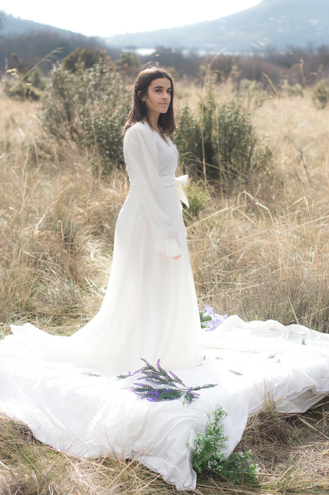
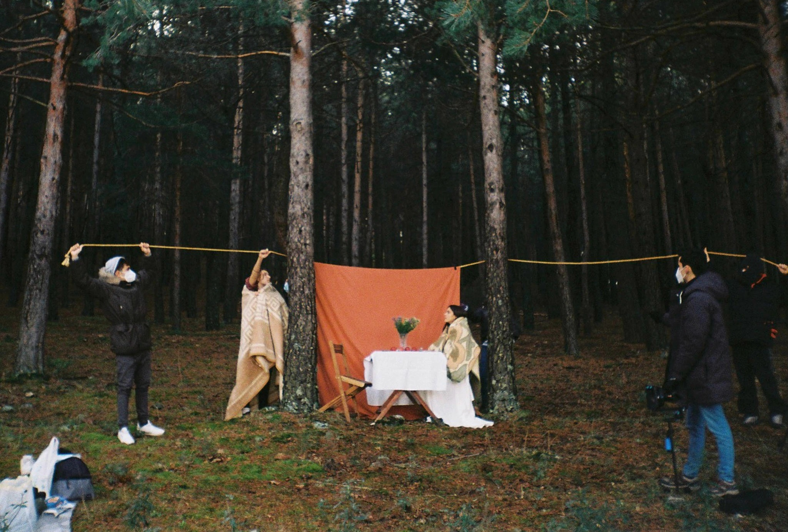

Videoclip “Dónde Estás”
Descripción
“Dónde Estás” es una canción que compuse bajo mi nombre artístico, Wiquex. Un mes después de haberla publicado se me propuso grabar el videoclip junto a los equipos de Curiosa Films y Producciones Pachorra.
Como director de producción, me encargué de organizar todo el proceso. En la preproducción preparamos la idea del vídeo, buscamos localizaciones y planificamos cada jornada.
Rodamos en exteriores, entre montaña, campo y pinar, buscando paisajes abiertos y una luz natural que encajara con el tono de la canción.
La historia gira en torno a una pareja, con el vestido blanco y la naturaleza como elementos principales. Todo gira en torno a una ilusión o sueño que tiene el personaje principal sobre una historia de amor.
Poder delegar la creación artística visual de una composición musical propia y ver en que se convertía, hizo que este proyecto fuera muy especial para mí.
Cliente
Año


